CODING AGENTS AS PIXEL WORLD MODELS
traex/DeepSeek-V4.1-Flash · material_0047
点击播放 · 原生 RGB 像素
逐轮保存的候选
回放视频、检查图与代码变化。
每份候选均可单独播放。实际图片检查记录在下方工具轨迹中。
候选 01播放与检查图
点击播放 · 原生 RGB 像素

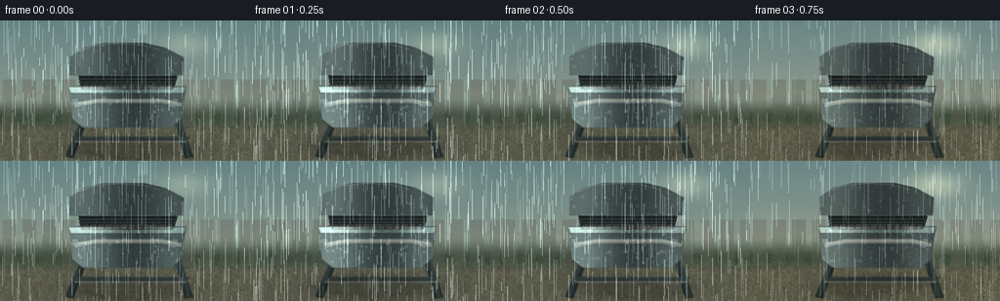
展开代码变化
--- 上一保存版本
+++ 本次保存版本
@@ -0,0 +1,423 @@
+"""Procedurally render a seasonal corrosion timelapse of a barbecue grill."""
+
+from pathlib import Path
+import math
+
+import numpy as np
+from PIL import Image, ImageDraw, ImageFilter
+
+import artifact_io
+
+
+CASE_DIR = Path(__file__).resolve().parent
+W, H = 256, 144
+S = 4
+RW, RH = W * S, H * S
+N = 20
+FPS = 4.0
+
+
+def smoothstep(a, b, x):
+ t = np.clip((x - a) / (b - a), 0.0, 1.0)
+ return t * t * (3.0 - 2.0 * t)
+
+
+def mix(a, b, t):
+ return a + (b - a) * t
+
+
+def rgb(hex_value):
+ value = hex_value.lstrip("#")
+ return np.array([int(value[i:i + 2], 16) for i in (0, 2, 4)], dtype=np.float32)
+
+
+def bilinear_resize(array, width, height):
+ image = Image.fromarray(np.clip(array, 0, 255).astype(np.uint8), "RGB")
+ return np.asarray(image.resize((width, height), Image.Resampling.BILINEAR), dtype=np.float32)
+
+
+def make_noise(rng, scale, octaves=4):
+ """Cheap tileable-ish fractal noise assembled from resized random fields."""
+ out = np.zeros((RH, RW), dtype=np.float32)
+ total = 0.0
+ for octave in range(octaves):
+ cells = max(3, scale * (2 ** octave))
+ low_w = max(2, RW // cells)
+ low_h = max(2, RH // cells)
+ field = rng.random((low_h, low_w), dtype=np.float32)
+ field = np.asarray(
+ Image.fromarray((field * 255).astype(np.uint8), "L").resize(
+ (RW, RH), Image.Resampling.BICUBIC
+ ),
+ dtype=np.float32,
+ ) / 255.0
+ weight = 0.58 ** octave
+ out += field * weight
+ total += weight
+ out /= total
+ return np.clip((out - 0.5) * 1.8 + 0.5, 0.0, 1.0)
+
+
+def soft_polygon(draw, points, fill, width=0):
+ draw.polygon(points, fill=tuple(int(v) for v in fill), width=width)
+
+
+def add_vertical_gradient(base, top, bottom, y0, y1):
+ t = np.linspace(0.0, 1.0, max(1, y1 - y0), dtype=np.float32)[:, None, None]
+ base[y0:y1] = base[y0:y1] * (1.0 - t) + (top[None, None, :] * (1.0 - t) + bottom[None, None, :] * t)
+
+
+def polygon_mask(points, blur=1.5):
+ mask = Image.new("L", (RW, RH), 0)
+ ImageDraw.Draw(mask).polygon(points, fill=255)
+ if blur:
+ mask = mask.filter(ImageFilter.GaussianBlur(blur))
+ return np.asarray(mask, dtype=np.float32)[:, :, None] / 255.0
+
+
+def rounded_mask(box, radius, blur=1.0):
+ mask = Image.new("L", (RW, RH), 0)
+ ImageDraw.Draw(mask).rounded_rectangle(box, radius=radius, fill=255)
+ if blur:
+ mask = mask.filter(ImageFilter.GaussianBlur(blur))
+ return np.asarray(mask, dtype=np.float32)[:, :, None] / 255.0
+
+
+def overlay(base, color, mask, alpha=1.0):
+ base[:] = base * (1.0 - mask * alpha) + np.asarray(color, dtype=np.float32) * mask * alpha
+
+
+def draw_background(rng, season):
+ y = np.linspace(0.0, 1.0, RH, dtype=np.float32)[:, None]
+ x = np.linspace(0.0, 1.0, RW, dtype=np.float32)[None, :]
+ sky = np.zeros((RH, RW, 3), dtype=np.float32)
+
+ # Overcast garden light with a narrow patch of sky behind the grill.
+ sky_top = mix(rgb("#7d9ea2"), rgb("#526f74"), season["winter"])
+ sky_bottom = mix(rgb("#d7d5ba"), rgb("#9ba6a1"), season["winter"])
+ sky[:] = sky_top * (1.0 - y[..., None]) + sky_bottom * y[..., None]
+ sun = np.exp(-(((x - 0.74) / 0.18) ** 2 + ((y - 0.17) / 0.16) ** 2) * 3.0)
+ sun *= 0.20 + 0.55 * season["summer"]
+ sky += sun[..., None] * rgb("#ffe1a1")
+
+ # Distant foliage built from blurred irregular discs.
+ canopy = np.zeros((RH, RW, 3), dtype=np.float32)
+ canopy[:] = rgb("#31493a")
+ leaf_noise = make_noise(rng, 5, 4)
+ colors = [
+ mix(rgb("#536e3d"), rgb("#786b36"), season["autumn"]),
+ mix(rgb("#3d5d3d"), rgb("#594d2d"), season["autumn"]),
+ mix(rgb("#71815a"), rgb("#999169"), season["autumn"]),
+ mix(rgb("#284437"), rgb("#4c412d"), season["autumn"]),
+ ]
+ for i in range(42):
+ cx = rng.uniform(-0.08, 1.08)
+ cy = rng.uniform(0.08, 0.56)
+ radius = rng.uniform(0.035, 0.15)
+ col = colors[int(rng.integers(0, len(colors)))]
+ disk = np.exp(-(((x - cx) / radius) ** 2 + ((y - cy) / (radius * 0.75)) ** 2) * 2.3)
+ canopy += disk[..., None] * (col - canopy) * rng.uniform(0.16, 0.32)
+ canopy *= (0.86 + 0.22 * leaf_noise[..., None])
+ sky = sky * 0.82 + canopy * 0.18
+
+ # Soft garden and fence bands keep the grill silhouette dominant.
+ garden = rgb("#3e4d38") * (0.82 + 0.25 * leaf_noise[..., None])
+ ground_y = smoothstep(0.54, 0.69, y[:, 0])[:, None, None]
+ sky = sky * (1.0 - ground_y) + garden * ground_y
+ ground = rgb("#6b6750") * (0.78 + 0.25 * leaf_noise[..., None])
+ ground_y2 = smoothstep(0.70, 0.80, y[:, 0])[:, None, None]
+ sky = sky * (1.0 - ground_y2) + ground * ground_y2
+
+ # Fence slats, muted and defocused.
+ for x0 in np.linspace(0.01, 0.96, 13):
+ a = x0 * RW
+ fence_col = mix(rgb("#6b6757"), rgb("#8a8064"), season["autumn"]) * rng.uniform(0.80, 1.05)
+ mask = ((x > x0) & (x < x0 + 0.055) & (y > 0.42) & (y < 0.75)).astype(np.float32)[..., None]
+ sky = sky * (1.0 - mask * 0.33) + fence_col * mask * 0.33
+ horizontal = ((y > 0.50) & (y < 0.53)).astype(np.float32)[..., None]
+ sky = sky * (1.0 - horizontal * 0.28) + rgb("#9a9278") * horizontal * 0.28
+
+ # Rain darkens the backdrop and adds a cool cast.
+ sky *= (1.0 - 0.15 * season["rain"])
+ sky += rgb("#47646c") * 0.06 * season["rain"]
+ return sky
+
+
+def grill_projection(t):
+ """Small camera push-in, ending close enough to reveal corrosion."""
+ zoom = 1.0 + 0.055 * smoothstep(0.0, 1.0, t)
+ cx, cy = RW * 0.50, RH * 0.57
+ return zoom, cx, cy
+
+
+def project_points(points, zoom, cx, cy):
+ return [((px - cx) * zoom + cx, (py - cy) * zoom + cy) for px, py in points]
+
+
+def draw_grill(rng, base, season, t, rust_noise, fine_noise):
+ zoom, cx, cy = grill_projection(t)
+ paint = mix(rgb("#222b2c"), rgb("#38403d"), 0.24 + 0.18 * season["summer"])
+ steel = rgb("#a9ada4")
+ dark_steel = rgb("#4c5350")
+
+ # Legs and lower shelf.
+ leg_l = project_points([(340, 386), (366, 386), (300, 566), (267, 558)], zoom, cx, cy)
+ leg_r = project_points([(706, 386), (734, 386), (792, 561), (757, 566)], zoom, cx, cy)
+ mask = polygon_mask(leg_l, 2.0)
+ overlay(base, rgb("#1b2322"), mask, 0.98)
+ mask = polygon_mask(leg_r, 2.0)
+ overlay(base, rgb("#202826"), mask, 0.98)
+ for points, col in [
+ ([(314, 407), (343, 407), (291, 558), (276, 555)], rgb("#48514c")),
+ ([(731, 407), (756, 407), (778, 558), (766, 560)], rgb("#48514c")),
+ ]:
+ mask = polygon_mask(project_points(points, zoom, cx, cy), 1.0)
+ overlay(base, col, mask, 0.35)
+
+ shelf = project_points([(295, 477), (778, 477), (763, 494), (306, 494)], zoom, cx, cy)
+ mask = polygon_mask(shelf, 1.2)
+ overlay(base, rgb("#303936"), mask, 0.95)
+ shelf_edge = project_points([(302, 494), (767, 494), (760, 501), (309, 501)], zoom, cx, cy)
+ overlay(base, rgb("#72766b"), polygon_mask(shelf_edge, 0.6), 0.65)
+
+ # Bowl/body: broad rounded trapezoid with a dark, glossy enamel.
+ body = project_points(
+ [(280, 270), (762, 270), (742, 402), (704, 438), (338, 438), (296, 402)],
+ zoom, cx, cy,
+ )
+ body_mask = polygon_mask(body, 2.0)
+ body_col = np.zeros_like(base)
+ body_col[:] = paint
+ body_col *= 0.86 + 0.30 * fine_noise[..., None]
+ yy = np.linspace(0, 1, RH, dtype=np.float32)[:, None, None]
+ body_col *= 0.80 + 0.35 * yy
+ base[:] = base * (1.0 - body_mask) + body_col * body_mask
+
+ # Warm reflected rim on the bowl.
+ rim = project_points([(282, 274), (760, 274), (752, 296), (290, 296)], zoom, cx, cy)
+ rim_mask = polygon_mask(rim, 1.3)
+ rim_col = np.zeros_like(base)
+ rim_col[:] = mix(rgb("#4c5d5a"), rgb("#776452"), season["autumn"] * 0.55)
+ rim_col *= 0.85 + 0.30 * fine_noise[..., None]
+ base[:] = base * (1.0 - rim_mask * 0.80) + rim_col * rim_mask * 0.80
+
+ # Handle and side brackets.
+ for points in [
+ [(294, 323), (315, 321), (331, 352), (309, 359)],
+ [(708, 321), (729, 323), (716, 359), (694, 352)],
+ ]:
+ m = polygon_mask(project_points(points, zoom, cx, cy), 1.0)
+ overlay(base, dark_steel, m, 0.92)
+ handle_pts = project_points([(304, 337), (392, 321), (668, 321), (744, 338), (742, 354), (662, 339), (398, 339), (306, 354)], zoom, cx, cy)
+ hm = polygon_mask(handle_pts, 1.2)
+ overlay(base, rgb("#5c625d"), hm, 0.95)
+ highlight = project_points([(318, 337), (394, 326), (666, 326), (727, 337), (724, 341), (661, 332), (399, 332), (319, 343)], zoom, cx, cy)
+ overlay(base, rgb("#b2b1a4"), polygon_mask(highlight, 0.6), 0.32)
+
+ # Interior and grates seen in perspective.
+ opening = project_points([(321, 224), (721, 224), (706, 282), (333, 282)], zoom, cx, cy)
+ om = polygon_mask(opening, 1.0)
+ overlay(base, rgb("#0e1212"), om, 0.95)
+ ash = project_points([(337, 261), (705, 261), (696, 280), (344, 280)], zoom, cx, cy)
+ am = polygon_mask(ash, 1.0)
+ ash_col = np.zeros_like(base)
+ ash_col[:] = rgb("#42403a") * (0.75 + 0.32 * fine_noise[..., None])
+ base[:] = base * (1.0 - am * 0.92) + ash_col * am * 0.92
+
+ grate_col = np.zeros_like(base)
+ grate_col[:] = mix(rgb("#151c1d"), rgb("#5a4a3e"), season["rust"] * 0.30)
+ # Long bars angle inward with perspective.
+ for i, x0 in enumerate(np.linspace(0.0, 1.0, 13)):
+ xa = 323 + x0 * 396
+ xb = 334 + x0 * 371
+ bar = project_points([(xa, 228), (xa + 8, 228), (xb + 6, 280), (xb, 280)], zoom, cx, cy)
+ bm = polygon_mask(bar, 0.7)
+ bcol = grate_col * (0.78 + 0.30 * (1.0 - abs(x0 - 0.5)))
+ base[:] = base * (1.0 - bm * 0.94) + bcol * bm * 0.94
+ if i % 2 == 0:
+ glint = project_points([(xa + 1, 229), (xa + 3, 229), (xb + 2, 276), (xb + 1, 276)], zoom, cx, cy)
+ overlay(base, rgb("#8e958b"), polygon_mask(glint, 0.4), 0.18 + 0.12 * season["sun"])
+ for y0 in (238, 251, 265):
+ cross = project_points([(322 + (y0 - 224) * 0.05, y0), (720 - (y0 - 224) * 0.07, y0), (719 - (y0 - 224) * 0.07, y0 + 5), (322 + (y0 - 224) * 0.05, y0 + 5)], zoom, cx, cy)
+ overlay(base, rgb("#293130"), polygon_mask(cross, 0.5), 0.86)
+
+ # Chrome rim around opening.
+ rim2 = project_points([(315, 218), (728, 218), (710, 226), (332, 226)], zoom, cx, cy)
+ overlay(base, rgb("#90968d"), polygon_mask(rim2, 0.6), 0.56)
+
+ # Lid behind opening, with a thick curved top.
+ lid = project_points([(286, 148), (343, 110), (421, 92), (590, 91), (677, 111), (752, 151), (749, 225), (285, 225)], zoom, cx, cy)
+ lm = polygon_mask(lid, 1.8)
+ lid_col = np.zeros_like(base)
+ lid_col[:] = paint * 1.05
+ lid_col *= 0.84 + 0.24 * fine_noise[..., None]
+ base[:] = base * (1.0 - lm * 0.99) + lid_col * lm * 0.99
+ lid_highlight = project_points([(319, 127), (379, 103), (479, 94), (579, 99), (651, 117)], zoom, cx, cy)
+ ImageDraw.Draw(Image.fromarray(np.zeros((2, 2, 3), dtype=np.uint8))).line(lid_highlight)
+ for idx in range(len(lid_highlight) - 1):
+ p0, p1 = lid_highlight[idx], lid_highlight[idx + 1]
+ m = Image.new("L", (RW, RH), 0)
+ ImageDraw.Draw(m).line([tuple(map(int, p0)), tuple(map(int, p1))], fill=255, width=4)
+ m = np.asarray(m.filter(ImageFilter.GaussianBlur(1.0)), dtype=np.float32)[..., None] / 255.0
+ overlay(base, rgb("#a6b0a8"), m, 0.23)
+
+ # Rust starts in seams, scratches, and the lower rim, then spreads.
+ rust_color = mix(rgb("#a55225"), rgb("#71321c"), season["rust"] * 0.45)
+ bright_rust = rgb("#c27a38")
+ rust_field = rust_noise * 1.25 + fine_noise * 0.38
+ growth = season["rust"]
+ seam_bands = np.zeros((RH, RW), dtype=np.float32)
+ for y0, thickness in [(272, 9), (292, 5), (436, 8), (220, 4)]:
+ yy0 = (y0 - 0.5) * S
+ seam_bands += np.exp(-((np.arange(RH)[:, None] - yy0) / (thickness * S)) ** 2)
+ rust_amount = np.clip((rust_field - (1.18 - 0.90 * growth)) * 2.0 + seam_bands * (0.34 + 0.44 * growth), 0, 1)[..., None]
+ rust_amount *= (body_mask + rim_mask * 0.8 + lm * 0.48) * growth
+ rust_col = rust_color[None, None, :] * (0.75 + 0.52 * fine_noise[..., None])
+ rust_col += bright_rust[None, None, :] * np.clip(rust_noise[..., None] - 0.55, 0, 1) * 0.9
+ base[:] = base * (1.0 - rust_amount * 0.92) + rust_col * rust_amount * 0.92
+
+ # Pitting: small dark orange clusters concentrated on the bowl front.
+ pits = np.zeros((RH, RW), dtype=np.float32)
+ for _ in range(150):
+ px = rng.uniform(0.23, 0.77) * RW
+ py = rng.uniform(0.26, 0.76) * RH
+ rr = rng.uniform(0.8, 5.0) * S * (0.4 + 0.7 * growth)
+ if rng.random() < 0.45 + 0.45 * growth:
+ pits += np.exp(-(((np.arange(RW)[None, :] - px) / rr) ** 2 + ((np.arange(RH)[:, None] - py) / (rr * 0.7)) ** 2))
+ pit_mask = np.clip(pits * (0.10 + 0.24 * growth), 0, 1)[..., None]
+ pit_mask *= (body_mask + lm * 0.7) * growth
+ pit_col = mix(rgb("#5b2d20"), rgb("#b9662f"), np.clip(fine_noise[..., None] + 0.18, 0, 1))
+ base[:] = base * (1.0 - pit_mask * 0.62) + pit_col * pit_mask * 0.62
+
+ # Paint chips appear late; each has a pale metal core and rust halo.
+ chips = np.zeros((RH, RW), dtype=np.float32)
+ halo = np.zeros((RH, RW), dtype=np.float32)
+ chip_n = int(4 + 34 * max(0.0, (growth - 0.35) / 0.65))
+ for _ in range(chip_n):
+ px = rng.uniform(0.24, 0.76) * RW
+ py = rng.uniform(0.27, 0.75) * RH
+ rx = rng.uniform(1.0, 4.0) * S
+ ry = rx * rng.uniform(0.55, 1.5)
+ xx = (np.arange(RW)[None, :] - px) / rx
+ yy2 = (np.arange(RH)[:, None] - py) / ry
+ theta = rng.uniform(0, math.pi)
+ ct, st = math.cos(theta), math.sin(theta)
+ xx2, yy2 = xx * ct - yy2 * st, xx * st + yy2 * ct
+ chips += np.exp(-((xx2 ** 2 + yy2 ** 2) * 1.9) ** 1.3)
+ halo += np.exp(-((xx2 ** 2 + yy2 ** 2) * 0.8))
+ chip_mask = np.clip(chips * 0.88, 0, 1)[..., None] * (body_mask + lm * 0.5) * smoothstep(0.38, 0.85, growth)
+ halo_mask = np.clip(halo * 0.18, 0, 1)[..., None] * (body_mask + lm * 0.5) * smoothstep(0.30, 0.90, growth)
+ base[:] = base * (1.0 - halo_mask * 0.45) + rgb("#934d29") * halo_mask * 0.45
+ base[:] = base * (1.0 - chip_mask) + (rgb("#b7b9ad") * (0.70 + 0.30 * fine_noise[..., None])) * chip_mask
+
+ # Wet sheen: broad vertical highlights, plus weather-driven microbeads.
+ wet = 0.22 + 0.78 * season["rain"]
+ xnorm = np.linspace(0, 1, RW, dtype=np.float32)[None, :, None]
+ sheen = np.exp(-((xnorm - 0.32) / 0.12) ** 2) * 0.42 + np.exp(-((xnorm - 0.69) / 0.08) ** 2) * 0.22
+ sheen = np.broadcast_to(sheen, (RH, RW, 1)) * (body_mask + lm * 0.7 + rim_mask) * wet
+ base += sheen * rgb("#b7d0c9")
+ beads = np.zeros((RH, RW), dtype=np.float32)
+ bead_n = int(10 + 80 * season["rain"])
+ for _ in range(bead_n):
+ px = rng.uniform(0.25, 0.76) * RW
+ py = rng.uniform(0.24, 0.73) * RH
+ rr = rng.uniform(0.7, 2.2) * S
+ beads += np.exp(-(((np.arange(RW)[None, :] - px) / rr) ** 2 + ((np.arange(RH)[:, None] - py) / rr) ** 2) * 1.7)
+ bead_mask = np.clip(beads * 0.45 * season["rain"], 0, 1)[..., None] * (body_mask + lm * 0.65)
+ base += bead_mask * rgb("#d4e3da") * 0.40
+
+ # Ground shadow and wet reflections anchor the grill.
+ shadow = np.zeros((RH, RW), dtype=np.float32)
+ for _ in range(7):
+ px = rng.uniform(0.36, 0.64) * RW
+ py = rng.uniform(0.84, 0.96) * RH
+ rr = rng.uniform(0.12, 0.25) * RW
+ shadow += np.exp(-(((np.arange(RW)[None, :] - px) / rr) ** 2 + ((np.arange(RH)[:, None] - py) / (rr * 0.22)) ** 2))
+ shadow = np.clip(shadow * 0.35, 0, 1)[..., None]
+ base *= 1.0 - 0.28 * shadow
+
+ return base
+
+
+def weather_layer(rng, image, season, t):
+ # Soft overcast veil and rain streaks.
+ rain = season["rain"]
+ if rain > 0.02:
+ veil = np.zeros_like(image)
+ veil[:] = rgb("#77949a")
+ image = image * (1.0 - 0.09 * rain) + veil * (0.09 * rain)
+ streak = np.zeros((RH, RW, 1), dtype=np.float32)
+ rng2 = np.random.default_rng(901 + int(round(t * 19)))
+ for _ in range(int(80 + 260 * rain)):
+ x = rng2.uniform(0, RW)
+ y = rng2.uniform(-0.2, 1.0) * RH
+ length = rng2.uniform(8, 45) * S
+ alpha = rng2.uniform(0.10, 0.38) * rain
+ x0 = int(np.clip(x, 0, RW - 1))
+ y0 = int(np.clip(y, 0, RH - 1))
+ y1 = int(np.clip(y + length, 0, RH))
+ if y1 > y0:
+ streak[y0:y1, max(0, x0 - 1):min(RW, x0 + 2)] += alpha
+ image += np.clip(streak, 0, 0.45) * rgb("#c5d9da")
+
+ # Fine film grain; kept subtle so compression does not overpower it.
+ grain = rng.normal(0.0, 2.4, (RH, RW, 1)).astype(np.float32)
+ image += grain
+ return np.clip(image, 0, 255)
+
+
+def seasonal_state(frame_index):
+ t = frame_index / (N - 1)
+ # Spring rain, humid summer sun, autumn damp, then cold wet winter.
+ spring = np.exp(-((t - 0.07) / 0.20) ** 2)
+ summer = np.exp(-((t - 0.38) / 0.18) ** 2)
+ autumn = np.exp(-((t - 0.68) / 0.17) ** 2)
+ winter = smoothstep(0.78, 1.0, t)
+ rust = smoothstep(0.04, 0.96, t) ** 0.74
+ rain = np.clip(0.82 * spring + 0.28 * autumn + 0.62 * winter + 0.20 * (1.0 - summer), 0, 1)
+ rain *= 0.55 + 0.45 * (0.5 + 0.5 * math.sin(t * math.pi * 5.0 + 0.7))
+ return {
+ "t": t,
+ "spring": spring,
+ "summer": summer,
+ "autumn": autumn,
+ "winter": winter,
+ "rust": float(rust),
+ "rain": float(rain),
+ "sun": float(summer),
+ }
+
+
+def render_frame(index):
+ season = seasonal_state(index)
+ rng = np.random.default_rng(7123 + index * 31)
+ global_rng = np.random.default_rng(44)
+ rust_noise = make_noise(global_rng, 5, 5)
+ fine_noise = make_noise(global_rng, 2, 3)
+ image = draw_background(global_rng, season)
+ image = draw_grill(rng, image, season, season["t"], rust_noise, fine_noise)
+ image = weather_layer(rng, image, season, season["t"])
+
+ # Gentle global grade: cooler wet frames, warmer dry summer.
+ warm = season["summer"] * 0.08
+ image[..., 0] *= 1.0 + warm
+ image[..., 2] *= 1.0 - warm * 0.65
+ image = np.clip(image, 0, 255)
+
+ # Supersampled render, then a tiny sharpen after downsampling.
+ small = bilinear_resize(image, W, H)
+ small = np.asarray(
+ Image.fromarray(small.astype(np.uint8), "RGB").filter(ImageFilter.UnsharpMask(radius=1.0, percent=65, threshold=2)),
+ dtype=np.uint8,
+ )
+ return small
+
+
+def main():
+ frames = np.stack([render_frame(i) for i in range(N)], axis=0)
+ artifact_io.save(frames, CASE_DIR)
+ print(f"saved {frames.shape} video frames at {FPS:g} fps")
+
+
+if __name__ == "__main__":
+ main()
候选 02播放与检查图
点击播放 · 原生 RGB 像素
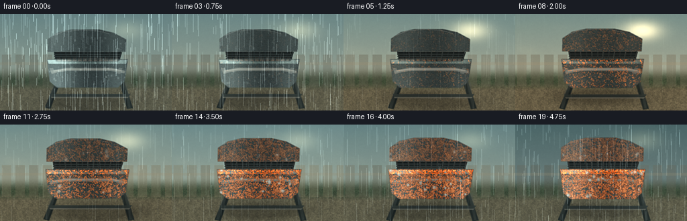
展开代码变化
--- 上一保存版本
+++ 本次保存版本
@@ -1,4 +1,4 @@
-"""Procedurally render a seasonal corrosion timelapse of a barbecue grill."""
+"""Render a rain-and-humidity corrosion timelapse of a charcoal kettle grill."""
from pathlib import Path
import math
@@ -11,371 +11,50 @@
CASE_DIR = Path(__file__).resolve().parent
W, H = 256, 144
-S = 4
-RW, RH = W * S, H * S
+SS = 2
+RW, RH = W * SS, H * SS
N = 20
FPS = 4.0
-def smoothstep(a, b, x):
- t = np.clip((x - a) / (b - a), 0.0, 1.0)
+def hex_rgb(value):
+ value = value.lstrip("#")
+ return np.array([int(value[i:i + 2], 16) for i in (0, 2, 4)], dtype=np.float32)
+
+
+def clamp01(value):
+ return np.clip(value, 0.0, 1.0)
+
+
+def smoothstep(edge0, edge1, value):
+ t = clamp01((value - edge0) / (edge1 - edge0))
return t * t * (3.0 - 2.0 * t)
-def mix(a, b, t):
- return a + (b - a) * t
-
-
-def rgb(hex_value):
- value = hex_value.lstrip("#")
- return np.array([int(value[i:i + 2], 16) for i in (0, 2, 4)], dtype=np.float32)
-
-
-def bilinear_resize(array, width, height):
- image = Image.fromarray(np.clip(array, 0, 255).astype(np.uint8), "RGB")
- return np.asarray(image.resize((width, height), Image.Resampling.BILINEAR), dtype=np.float32)
-
-
-def make_noise(rng, scale, octaves=4):
- """Cheap tileable-ish fractal noise assembled from resized random fields."""
- out = np.zeros((RH, RW), dtype=np.float32)
- total = 0.0
- for octave in range(octaves):
- cells = max(3, scale * (2 ** octave))
- low_w = max(2, RW // cells)
- low_h = max(2, RH // cells)
- field = rng.random((low_h, low_w), dtype=np.float32)
- field = np.asarray(
- Image.fromarray((field * 255).astype(np.uint8), "L").resize(
- (RW, RH), Image.Resampling.BICUBIC
- ),
- dtype=np.float32,
- ) / 255.0
- weight = 0.58 ** octave
- out += field * weight
- total += weight
- out /= total
- return np.clip((out - 0.5) * 1.8 + 0.5, 0.0, 1.0)
-
-
-def soft_polygon(draw, points, fill, width=0):
- draw.polygon(points, fill=tuple(int(v) for v in fill), width=width)
-
-
-def add_vertical_gradient(base, top, bottom, y0, y1):
- t = np.linspace(0.0, 1.0, max(1, y1 - y0), dtype=np.float32)[:, None, None]
- base[y0:y1] = base[y0:y1] * (1.0 - t) + (top[None, None, :] * (1.0 - t) + bottom[None, None, :] * t)
-
-
-def polygon_mask(points, blur=1.5):
- mask = Image.new("L", (RW, RH), 0)
- ImageDraw.Draw(mask).polygon(points, fill=255)
- if blur:
- mask = mask.filter(ImageFilter.GaussianBlur(blur))
- return np.asarray(mask, dtype=np.float32)[:, :, None] / 255.0
-
-
-def rounded_mask(box, radius, blur=1.0):
- mask = Image.new("L", (RW, RH), 0)
- ImageDraw.Draw(mask).rounded_rectangle(box, radius=radius, fill=255)
- if blur:
- mask = mask.filter(ImageFilter.GaussianBlur(blur))
- return np.asarray(mask, dtype=np.float32)[:, :, None] / 255.0
-
-
-def overlay(base, color, mask, alpha=1.0):
- base[:] = base * (1.0 - mask * alpha) + np.asarray(color, dtype=np.float32) * mask * alpha
-
-
-def draw_background(rng, season):
- y = np.linspace(0.0, 1.0, RH, dtype=np.float32)[:, None]
- x = np.linspace(0.0, 1.0, RW, dtype=np.float32)[None, :]
- sky = np.zeros((RH, RW, 3), dtype=np.float32)
-
- # Overcast garden light with a narrow patch of sky behind the grill.
- sky_top = mix(rgb("#7d9ea2"), rgb("#526f74"), season["winter"])
- sky_bottom = mix(rgb("#d7d5ba"), rgb("#9ba6a1"), season["winter"])
- sky[:] = sky_top * (1.0 - y[..., None]) + sky_bottom * y[..., None]
- sun = np.exp(-(((x - 0.74) / 0.18) ** 2 + ((y - 0.17) / 0.16) ** 2) * 3.0)
- sun *= 0.20 + 0.55 * season["summer"]
- sky += sun[..., None] * rgb("#ffe1a1")
-
- # Distant foliage built from blurred irregular discs.
- canopy = np.zeros((RH, RW, 3), dtype=np.float32)
- canopy[:] = rgb("#31493a")
- leaf_noise = make_noise(rng, 5, 4)
- colors = [
- mix(rgb("#536e3d"), rgb("#786b36"), season["autumn"]),
- mix(rgb("#3d5d3d"), rgb("#594d2d"), season["autumn"]),
- mix(rgb("#71815a"), rgb("#999169"), season["autumn"]),
- mix(rgb("#284437"), rgb("#4c412d"), season["autumn"]),
- ]
- for i in range(42):
- cx = rng.uniform(-0.08, 1.08)
- cy = rng.uniform(0.08, 0.56)
- radius = rng.uniform(0.035, 0.15)
- col = colors[int(rng.integers(0, len(colors)))]
- disk = np.exp(-(((x - cx) / radius) ** 2 + ((y - cy) / (radius * 0.75)) ** 2) * 2.3)
- canopy += disk[..., None] * (col - canopy) * rng.uniform(0.16, 0.32)
- canopy *= (0.86 + 0.22 * leaf_noise[..., None])
- sky = sky * 0.82 + canopy * 0.18
-
- # Soft garden and fence bands keep the grill silhouette dominant.
- garden = rgb("#3e4d38") * (0.82 + 0.25 * leaf_noise[..., None])
- ground_y = smoothstep(0.54, 0.69, y[:, 0])[:, None, None]
- sky = sky * (1.0 - ground_y) + garden * ground_y
- ground = rgb("#6b6750") * (0.78 + 0.25 * leaf_noise[..., None])
- ground_y2 = smoothstep(0.70, 0.80, y[:, 0])[:, None, None]
- sky = sky * (1.0 - ground_y2) + ground * ground_y2
-
- # Fence slats, muted and defocused.
- for x0 in np.linspace(0.01, 0.96, 13):
- a = x0 * RW
- fence_col = mix(rgb("#6b6757"), rgb("#8a8064"), season["autumn"]) * rng.uniform(0.80, 1.05)
- mask = ((x > x0) & (x < x0 + 0.055) & (y > 0.42) & (y < 0.75)).astype(np.float32)[..., None]
- sky = sky * (1.0 - mask * 0.33) + fence_col * mask * 0.33
- horizontal = ((y > 0.50) & (y < 0.53)).astype(np.float32)[..., None]
- sky = sky * (1.0 - horizontal * 0.28) + rgb("#9a9278") * horizontal * 0.28
-
- # Rain darkens the backdrop and adds a cool cast.
- sky *= (1.0 - 0.15 * season["rain"])
- sky += rgb("#47646c") * 0.06 * season["rain"]
- return sky
-
-
-def grill_projection(t):
- """Small camera push-in, ending close enough to reveal corrosion."""
- zoom = 1.0 + 0.055 * smoothstep(0.0, 1.0, t)
- cx, cy = RW * 0.50, RH * 0.57
- return zoom, cx, cy
-
-
-def project_points(points, zoom, cx, cy):
- return [((px - cx) * zoom + cx, (py - cy) * zoom + cy) for px, py in points]
-
-
-def draw_grill(rng, base, season, t, rust_noise, fine_noise):
- zoom, cx, cy = grill_projection(t)
- paint = mix(rgb("#222b2c"), rgb("#38403d"), 0.24 + 0.18 * season["summer"])
- steel = rgb("#a9ada4")
- dark_steel = rgb("#4c5350")
-
- # Legs and lower shelf.
- leg_l = project_points([(340, 386), (366, 386), (300, 566), (267, 558)], zoom, cx, cy)
- leg_r = project_points([(706, 386), (734, 386), (792, 561), (757, 566)], zoom, cx, cy)
- mask = polygon_mask(leg_l, 2.0)
- overlay(base, rgb("#1b2322"), mask, 0.98)
- mask = polygon_mask(leg_r, 2.0)
- overlay(base, rgb("#202826"), mask, 0.98)
- for points, col in [
- ([(314, 407), (343, 407), (291, 558), (276, 555)], rgb("#48514c")),
- ([(731, 407), (756, 407), (778, 558), (766, 560)], rgb("#48514c")),
- ]:
- mask = polygon_mask(project_points(points, zoom, cx, cy), 1.0)
- overlay(base, col, mask, 0.35)
-
- shelf = project_points([(295, 477), (778, 477), (763, 494), (306, 494)], zoom, cx, cy)
- mask = polygon_mask(shelf, 1.2)
- overlay(base, rgb("#303936"), mask, 0.95)
- shelf_edge = project_points([(302, 494), (767, 494), (760, 501), (309, 501)], zoom, cx, cy)
- overlay(base, rgb("#72766b"), polygon_mask(shelf_edge, 0.6), 0.65)
-
- # Bowl/body: broad rounded trapezoid with a dark, glossy enamel.
- body = project_points(
- [(280, 270), (762, 270), (742, 402), (704, 438), (338, 438), (296, 402)],
- zoom, cx, cy,
- )
- body_mask = polygon_mask(body, 2.0)
- body_col = np.zeros_like(base)
- body_col[:] = paint
- body_col *= 0.86 + 0.30 * fine_noise[..., None]
- yy = np.linspace(0, 1, RH, dtype=np.float32)[:, None, None]
- body_col *= 0.80 + 0.35 * yy
- base[:] = base * (1.0 - body_mask) + body_col * body_mask
-
- # Warm reflected rim on the bowl.
- rim = project_points([(282, 274), (760, 274), (752, 296), (290, 296)], zoom, cx, cy)
- rim_mask = polygon_mask(rim, 1.3)
- rim_col = np.zeros_like(base)
- rim_col[:] = mix(rgb("#4c5d5a"), rgb("#776452"), season["autumn"] * 0.55)
- rim_col *= 0.85 + 0.30 * fine_noise[..., None]
- base[:] = base * (1.0 - rim_mask * 0.80) + rim_col * rim_mask * 0.80
-
- # Handle and side brackets.
- for points in [
- [(294, 323), (315, 321), (331, 352), (309, 359)],
- [(708, 321), (729, 323), (716, 359), (694, 352)],
- ]:
- m = polygon_mask(project_points(points, zoom, cx, cy), 1.0)
- overlay(base, dark_steel, m, 0.92)
- handle_pts = project_points([(304, 337), (392, 321), (668, 321), (744, 338), (742, 354), (662, 339), (398, 339), (306, 354)], zoom, cx, cy)
- hm = polygon_mask(handle_pts, 1.2)
- overlay(base, rgb("#5c625d"), hm, 0.95)
- highlight = project_points([(318, 337), (394, 326), (666, 326), (727, 337), (724, 341), (661, 332), (399, 332), (319, 343)], zoom, cx, cy)
- overlay(base, rgb("#b2b1a4"), polygon_mask(highlight, 0.6), 0.32)
-
- # Interior and grates seen in perspective.
- opening = project_points([(321, 224), (721, 224), (706, 282), (333, 282)], zoom, cx, cy)
- om = polygon_mask(opening, 1.0)
- overlay(base, rgb("#0e1212"), om, 0.95)
- ash = project_points([(337, 261), (705, 261), (696, 280), (344, 280)], zoom, cx, cy)
- am = polygon_mask(ash, 1.0)
- ash_col = np.zeros_like(base)
- ash_col[:] = rgb("#42403a") * (0.75 + 0.32 * fine_noise[..., None])
- base[:] = base * (1.0 - am * 0.92) + ash_col * am * 0.92
-
- grate_col = np.zeros_like(base)
- grate_col[:] = mix(rgb("#151c1d"), rgb("#5a4a3e"), season["rust"] * 0.30)
- # Long bars angle inward with perspective.
- for i, x0 in enumerate(np.linspace(0.0, 1.0, 13)):
- xa = 323 + x0 * 396
- xb = 334 + x0 * 371
- bar = project_points([(xa, 228), (xa + 8, 228), (xb + 6, 280), (xb, 280)], zoom, cx, cy)
- bm = polygon_mask(bar, 0.7)
- bcol = grate_col * (0.78 + 0.30 * (1.0 - abs(x0 - 0.5)))
- base[:] = base * (1.0 - bm * 0.94) + bcol * bm * 0.94
- if i % 2 == 0:
- glint = project_points([(xa + 1, 229), (xa + 3, 229), (xb + 2, 276), (xb + 1, 276)], zoom, cx, cy)
- overlay(base, rgb("#8e958b"), polygon_mask(glint, 0.4), 0.18 + 0.12 * season["sun"])
- for y0 in (238, 251, 265):
- cross = project_points([(322 + (y0 - 224) * 0.05, y0), (720 - (y0 - 224) * 0.07, y0), (719 - (y0 - 224) * 0.07, y0 + 5), (322 + (y0 - 224) * 0.05, y0 + 5)], zoom, cx, cy)
- overlay(base, rgb("#293130"), polygon_mask(cross, 0.5), 0.86)
-
- # Chrome rim around opening.
- rim2 = project_points([(315, 218), (728, 218), (710, 226), (332, 226)], zoom, cx, cy)
- overlay(base, rgb("#90968d"), polygon_mask(rim2, 0.6), 0.56)
-
- # Lid behind opening, with a thick curved top.
- lid = project_points([(286, 148), (343, 110), (421, 92), (590, 91), (677, 111), (752, 151), (749, 225), (285, 225)], zoom, cx, cy)
- lm = polygon_mask(lid, 1.8)
- lid_col = np.zeros_like(base)
- lid_col[:] = paint * 1.05
- lid_col *= 0.84 + 0.24 * fine_noise[..., None]
- base[:] = base * (1.0 - lm * 0.99) + lid_col * lm * 0.99
- lid_highlight = project_points([(319, 127), (379, 103), (479, 94), (579, 99), (651, 117)], zoom, cx, cy)
- ImageDraw.Draw(Image.fromarray(np.zeros((2, 2, 3), dtype=np.uint8))).line(lid_highlight)
- for idx in range(len(lid_highlight) - 1):
- p0, p1 = lid_highlight[idx], lid_highlight[idx + 1]
- m = Image.new("L", (RW, RH), 0)
- ImageDraw.Draw(m).line([tuple(map(int, p0)), tuple(map(int, p1))], fill=255, width=4)
- m = np.asarray(m.filter(ImageFilter.GaussianBlur(1.0)), dtype=np.float32)[..., None] / 255.0
- overlay(base, rgb("#a6b0a8"), m, 0.23)
-
- # Rust starts in seams, scratches, and the lower rim, then spreads.
- rust_color = mix(rgb("#a55225"), rgb("#71321c"), season["rust"] * 0.45)
- bright_rust = rgb("#c27a38")
- rust_field = rust_noise * 1.25 + fine_noise * 0.38
- growth = season["rust"]
- seam_bands = np.zeros((RH, RW), dtype=np.float32)
- for y0, thickness in [(272, 9), (292, 5), (436, 8), (220, 4)]:
- yy0 = (y0 - 0.5) * S
- seam_bands += np.exp(-((np.arange(RH)[:, None] - yy0) / (thickness * S)) ** 2)
- rust_amount = np.clip((rust_field - (1.18 - 0.90 * growth)) * 2.0 + seam_bands * (0.34 + 0.44 * growth), 0, 1)[..., None]
- rust_amount *= (body_mask + rim_mask * 0.8 + lm * 0.48) * growth
- rust_col = rust_color[None, None, :] * (0.75 + 0.52 * fine_noise[..., None])
- rust_col += bright_rust[None, None, :] * np.clip(rust_noise[..., None] - 0.55, 0, 1) * 0.9
- base[:] = base * (1.0 - rust_amount * 0.92) + rust_col * rust_amount * 0.92
-
- # Pitting: small dark orange clusters concentrated on the bowl front.
- pits = np.zeros((RH, RW), dtype=np.float32)
- for _ in range(150):
- px = rng.uniform(0.23, 0.77) * RW
- py = rng.uniform(0.26, 0.76) * RH
- rr = rng.uniform(0.8, 5.0) * S * (0.4 + 0.7 * growth)
- if rng.random() < 0.45 + 0.45 * growth:
- pits += np.exp(-(((np.arange(RW)[None, :] - px) / rr) ** 2 + ((np.arange(RH)[:, None] - py) / (rr * 0.7)) ** 2))
- pit_mask = np.clip(pits * (0.10 + 0.24 * growth), 0, 1)[..., None]
- pit_mask *= (body_mask + lm * 0.7) * growth
- pit_col = mix(rgb("#5b2d20"), rgb("#b9662f"), np.clip(fine_noise[..., None] + 0.18, 0, 1))
- base[:] = base * (1.0 - pit_mask * 0.62) + pit_col * pit_mask * 0.62
-
- # Paint chips appear late; each has a pale metal core and rust halo.
- chips = np.zeros((RH, RW), dtype=np.float32)
- halo = np.zeros((RH, RW), dtype=np.float32)
- chip_n = int(4 + 34 * max(0.0, (growth - 0.35) / 0.65))
- for _ in range(chip_n):
- px = rng.uniform(0.24, 0.76) * RW
- py = rng.uniform(0.27, 0.75) * RH
- rx = rng.uniform(1.0, 4.0) * S
- ry = rx * rng.uniform(0.55, 1.5)
- xx = (np.arange(RW)[None, :] - px) / rx
- yy2 = (np.arange(RH)[:, None] - py) / ry
- theta = rng.uniform(0, math.pi)
- ct, st = math.cos(theta), math.sin(theta)
- xx2, yy2 = xx * ct - yy2 * st, xx * st + yy2 * ct
- chips += np.exp(-((xx2 ** 2 + yy2 ** 2) * 1.9) ** 1.3)
- halo += np.exp(-((xx2 ** 2 + yy2 ** 2) * 0.8))
- chip_mask = np.clip(chips * 0.88, 0, 1)[..., None] * (body_mask + lm * 0.5) * smoothstep(0.38, 0.85, growth)
- halo_mask = np.clip(halo * 0.18, 0, 1)[..., None] * (body_mask + lm * 0.5) * smoothstep(0.30, 0.90, growth)
- base[:] = base * (1.0 - halo_mask * 0.45) + rgb("#934d29") * halo_mask * 0.45
- base[:] = base * (1.0 - chip_mask) + (rgb("#b7b9ad") * (0.70 + 0.30 * fine_noise[..., None])) * chip_mask
-
- # Wet sheen: broad vertical highlights, plus weather-driven microbeads.
- wet = 0.22 + 0.78 * season["rain"]
- xnorm = np.linspace(0, 1, RW, dtype=np.float32)[None, :, None]
- sheen = np.exp(-((xnorm - 0.32) / 0.12) ** 2) * 0.42 + np.exp(-((xnorm - 0.69) / 0.08) ** 2) * 0.22
- sheen = np.broadcast_to(sheen, (RH, RW, 1)) * (body_mask + lm * 0.7 + rim_mask) * wet
- base += sheen * rgb("#b7d0c9")
- beads = np.zeros((RH, RW), dtype=np.float32)
- bead_n = int(10 + 80 * season["rain"])
- for _ in range(bead_n):
- px = rng.uniform(0.25, 0.76) * RW
- py = rng.uniform(0.24, 0.73) * RH
- rr = rng.uniform(0.7, 2.2) * S
- beads += np.exp(-(((np.arange(RW)[None, :] - px) / rr) ** 2 + ((np.arange(RH)[:, None] - py) / rr) ** 2) * 1.7)
- bead_mask = np.clip(beads * 0.45 * season["rain"], 0, 1)[..., None] * (body_mask + lm * 0.65)
- base += bead_mask * rgb("#d4e3da") * 0.40
-
- # Ground shadow and wet reflections anchor the grill.
- shadow = np.zeros((RH, RW), dtype=np.float32)
- for _ in range(7):
- px = rng.uniform(0.36, 0.64) * RW
- py = rng.uniform(0.84, 0.96) * RH
- rr = rng.uniform(0.12, 0.25) * RW
- shadow += np.exp(-(((np.arange(RW)[None, :] - px) / rr) ** 2 + ((np.arange(RH)[:, None] - py) / (rr * 0.22)) ** 2))
- shadow = np.clip(shadow * 0.35, 0, 1)[..., None]
- base *= 1.0 - 0.28 * shadow
-
- return base
-
-
-def weather_layer(rng, image, season, t):
- # Soft overcast veil and rain streaks.
- rain = season["rain"]
- if rain > 0.02:
- veil = np.zeros_like(image)
- veil[:] = rgb("#77949a")
- image = image * (1.0 - 0.09 * rain) + veil * (0.09 * rain)
- streak = np.zeros((RH, RW, 1), dtype=np.float32)
- rng2 = np.random.default_rng(901 + int(round(t * 19)))
- for _ in range(int(80 + 260 * rain)):
- x = rng2.uniform(0, RW)
- y = rng2.uniform(-0.2, 1.0) * RH
- length = rng2.uniform(8, 45) * S
- alpha = rng2.uniform(0.10, 0.38) * rain
- x0 = int(np.clip(x, 0, RW - 1))
- y0 = int(np.clip(y, 0, RH - 1))
- y1 = int(np.clip(y + length, 0, RH))
- if y1 > y0:
- streak[y0:y1, max(0, x0 - 1):min(RW, x0 + 2)] += alpha
- image += np.clip(streak, 0, 0.45) * rgb("#c5d9da")
-
- # Fine film grain; kept subtle so compression does not overpower it.
- grain = rng.normal(0.0, 2.4, (RH, RW, 1)).astype(np.float32)
- image += grain
- return np.clip(image, 0, 255)
-
-
-def seasonal_state(frame_index):
+def normalize(vector):
+ return vector / np.maximum(np.linalg.norm(vector, axis=-1, keepdims=True), 1e-8)
+
+
+def dot(a, b):
+ return np.sum(a * b, axis=-1)
+
+
+def mix_color(a, b, amount):
+ amount = np.asarray(amount, dtype=np.float32)
+ if amount.ndim == a.ndim - 1:
+ amount = amount[..., None]
+ return a * (1.0 - amount) + b * amount
+
+
+def season_state(frame_index):
t = frame_index / (N - 1)
- # Spring rain, humid summer sun, autumn damp, then cold wet winter.
- spring = np.exp(-((t - 0.07) / 0.20) ** 2)
- summer = np.exp(-((t - 0.38) / 0.18) ** 2)
- autumn = np.exp(-((t - 0.68) / 0.17) ** 2)
- winter = smoothstep(0.78, 1.0, t)
- rust = smoothstep(0.04, 0.96, t) ** 0.74
- rain = np.clip(0.82 * spring + 0.28 * autumn + 0.62 * winter + 0.20 * (1.0 - summer), 0, 1)
- rain *= 0.55 + 0.45 * (0.5 + 0.5 * math.sin(t * math.pi * 5.0 + 0.7))
+ spring = math.exp(-((t - 0.04) / 0.21) ** 2)
+ summer = math.exp(-((t - 0.34) / 0.20) ** 2)
+ autumn = math.exp(-((t - 0.66) / 0.18) ** 2)
+ winter = smoothstep(0.76, 1.0, t)
+ rust = smoothstep(0.02, 0.98, t) ** 0.70
+ wet_wave = 0.5 + 0.5 * math.sin(t * math.pi * 4.5 + 0.4)
+ rain = (0.68 * spring + 0.18 * autumn + 0.72 * winter + 0.15 * (1.0 - summer)) * (0.72 + 0.28 * wet_wave)
return {
"t": t,
"spring": spring,
@@ -383,40 +62,393 @@
"autumn": autumn,
"winter": winter,
"rust": float(rust),
- "rain": float(rain),
- "sun": float(summer),
+ "rain": float(np.clip(rain, 0.0, 1.0)),
+ "light": 0.72 + 0.34 * summer - 0.15 * winter,
}
-def render_frame(index):
- season = seasonal_state(index)
- rng = np.random.default_rng(7123 + index * 31)
- global_rng = np.random.default_rng(44)
- rust_noise = make_noise(global_rng, 5, 5)
- fine_noise = make_noise(global_rng, 2, 3)
- image = draw_background(global_rng, season)
- image = draw_grill(rng, image, season, season["t"], rust_noise, fine_noise)
- image = weather_layer(rng, image, season, season["t"])
-
- # Gentle global grade: cooler wet frames, warmer dry summer.
- warm = season["summer"] * 0.08
- image[..., 0] *= 1.0 + warm
- image[..., 2] *= 1.0 - warm * 0.65
+# Tileable value-noise volumes, sampled with trilinear interpolation.
+NOISE_RNG = np.random.default_rng(1947)
+NOISE_GRIDS = {
+ 12: NOISE_RNG.random((12, 12, 12), dtype=np.float32),
+ 24: NOISE_RNG.random((24, 24, 24), dtype=np.float32),
+ 48: NOISE_RNG.random((48, 48, 48), dtype=np.float32),
+}
+
+
+def sample_noise(points, size):
+ grid = NOISE_GRIDS[size]
+ coords = points * size
+ base = np.floor(coords).astype(np.int32)
+ frac = coords - base
+ i0 = np.mod(base, size)
+ i1 = np.mod(base + 1, size)
+ x0, y0, z0 = i0[..., 0], i0[..., 1], i0[..., 2]
+ x1, y1, z1 = i1[..., 0], i1[..., 1], i1[..., 2]
+ fx, fy, fz = frac[..., 0], frac[..., 1], frac[..., 2]
+ fx = fx * fx * (3.0 - 2.0 * fx)
+ fy = fy * fy * (3.0 - 2.0 * fy)
+ fz = fz * fz * (3.0 - 2.0 * fz)
+ c000 = grid[x0, y0, z0]
+ c100 = grid[x1, y0, z0]
+ c010 = grid[x0, y1, z0]
+ c110 = grid[x1, y1, z0]
+ c001 = grid[x0, y0, z1]
+ c101 = grid[x1, y0, z1]
+ c011 = grid[x0, y1, z1]
+ c111 = grid[x1, y1, z1]
+ c00 = c000 * (1.0 - fx) + c100 * fx
+ c10 = c010 * (1.0 - fx) + c110 * fx
+ c01 = c001 * (1.0 - fx) + c101 * fx
+ c11 = c011 * (1.0 - fx) + c111 * fx
+ c0 = c00 * (1.0 - fy) + c10 * fy
+ c1 = c01 * (1.0 - fy) + c11 * fy
+ return c0 * (1.0 - fz) + c1 * fz
+
+
+def fbm(points):
+ return (
+ 0.56 * sample_noise(points * 0.82 + 0.13, 12)
+ + 0.29 * sample_noise(points * 1.92 + 0.41, 24)
+ + 0.15 * sample_noise(points * 4.10 + 0.77, 48)
+ )
+
+
+def make_camera(t):
+ zoom = 1.0 + 0.035 * smoothstep(0.0, 1.0, t)
+ camera = np.array([0.48, 1.18, 4.10], dtype=np.float32)
+ target = np.array([0.0, 0.66, 0.0], dtype=np.float32)
+ forward = normalize(target - camera)
+ right = normalize(np.cross(forward, np.array([0.0, 1.0, 0.0], dtype=np.float32)))
+ up = normalize(np.cross(right, forward))
+ tan_half = math.tan(math.radians(28.0) / 2.0) / zoom
+ return camera, forward, right, up, tan_half
+
+
+def make_rays(camera, forward, right, up, tan_half):
+ ys, xs = np.mgrid[0:RH, 0:RW].astype(np.float32)
+ nx = (xs + 0.5) / RW * 2.0 - 1.0
+ ny = 1.0 - (ys + 0.5) / RH * 2.0
+ aspect = RW / RH
+ directions = (
+ forward[None, None, :]
+ + nx[..., None] * tan_half * aspect * right[None, None, :]
+ + ny[..., None] * tan_half * up[None, None, :]
+ )
+ return camera[None, None, :], normalize(directions)
+
+
+def world_to_screen(point, camera, forward, right, up, tan_half):
+ relative = np.asarray(point, dtype=np.float32) - camera
+ depth = float(np.dot(relative, forward))
+ if depth <= 0.01:
+ return (-1000.0, -1000.0)
+ aspect = RW / RH
+ sx = float(np.dot(relative, right)) / (depth * tan_half * aspect)
+ sy = float(np.dot(relative, up)) / (depth * tan_half)
+ return ((sx + 1.0) * 0.5 * RW, (1.0 - sy) * 0.5 * RH)
+
+
+def ellipsoid_hit(origin, direction, center, radii, min_y=-1e9, max_y=1e9):
+ oc = (origin - np.asarray(center, dtype=np.float32)) / np.asarray(radii, dtype=np.float32)
+ dc = direction / np.asarray(radii, dtype=np.float32)
+ a = dot(dc, dc)
+ b = 2.0 * dot(oc, dc)
+ c = dot(oc, oc) - 1.0
+ discriminant = b * b - 4.0 * a * c
+ valid = discriminant > 0.0
+ root = np.sqrt(np.maximum(discriminant, 0.0))
+ t0 = (-b - root) / (2.0 * a)
+ t1 = (-b + root) / (2.0 * a)
+ t = np.where(t0 > 0.001, t0, t1)
+ hit = valid & (t > 0.001)
+ y = origin[..., 1] + direction[..., 1] * t
+ hit &= (y >= min_y) & (y <= max_y)
+ return hit, np.where(hit, t, np.inf)
+
+
+def elliptical_cylinder_hit(origin, direction, radii, y0, y1):
+ a = direction[..., 0] ** 2 / radii[0] ** 2 + direction[..., 2] ** 2 / radii[1] ** 2
+ b = 2.0 * (
+ origin[..., 0] * direction[..., 0] / radii[0] ** 2
+ + origin[..., 2] * direction[..., 2] / radii[1] ** 2
+ )
+ c = origin[..., 0] ** 2 / radii[0] ** 2 + origin[..., 2] ** 2 / radii[1] ** 2 - 1.0
+ disc = b * b - 4.0 * a * c
+ valid = disc > 0.0
+ root = np.sqrt(np.maximum(disc, 0.0))
+ t0 = (-b - root) / (2.0 * a)
+ t1 = (-b + root) / (2.0 * a)
+ t = np.where(t0 > 0.001, t0, t1)
+ hit = valid & (t > 0.001)
+ y = origin[..., 1] + direction[..., 1] * t
+ hit &= (y >= y0) & (y <= y1)
+ return hit, np.where(hit, t, np.inf)
+
+
+def make_background(season, rng):
+ """Defocused garden backdrop whose foliage turns through the seasons."""
+ ys, xs = np.mgrid[0:RH, 0:RW].astype(np.float32)
+ y = ys / max(1, RH - 1)
+ x = xs / max(1, RW - 1)
+ top = mix_color(hex_rgb("#8da3a2"), hex_rgb("#7b8585"), season["winter"]) * 0.82
+ bottom = mix_color(hex_rgb("#d0c8ac"), hex_rgb("#b8bab0"), season["winter"]) * (0.82 + 0.18 * season["light"])
+ background = top[None, None, :] * (1.0 - y[..., None]) + bottom[None, None, :] * y[..., None]
+
+ tree = np.zeros((RH, RW, 3), dtype=np.float32)
+ tree[:] = hex_rgb("#34453a")
+ palette = [
+ mix_color(hex_rgb("#4d7044"), hex_rgb("#9b8a4a"), season["autumn"]),
+ mix_color(hex_rgb("#6b8351"), hex_rgb("#b18743"), season["autumn"]),
+ mix_color(hex_rgb("#365b40"), hex_rgb("#765c34"), season["autumn"]),
+ mix_color(hex_rgb("#81926a"), hex_rgb("#b5a36c"), season["autumn"]),
+ ]
+ for _ in range(18):
+ cx = rng.uniform(-0.08, 1.08)
+ cy = rng.uniform(0.10, 0.52)
+ rx = rng.uniform(0.055, 0.18)
+ ry = rx * rng.uniform(0.65, 1.2)
+ disk = np.exp(-(((x - cx) / rx) ** 2 + ((y - cy) / ry) ** 2) * 2.0)
+ color = palette[int(rng.integers(0, len(palette)))]
+ tree += disk[..., None] * (color - tree) * rng.uniform(0.20, 0.38)
+ horizon_blend = smoothstep(0.34, 0.70, y)[..., None]
+ background = background * (1.0 - horizon_blend * 0.46) + tree * horizon_blend * 0.46
+
+ # A simple fence creates a domestic garden setting without competing detail.
+ fence = np.zeros((RH, RW, 3), dtype=np.float32)
+ for index in range(15):
+ x0 = 0.015 + index * 0.070
+ slat = (x >= x0) & (x < x0 + 0.047) & (y > 0.39) & (y < 0.72)
+ fence[slat] = mix_color(hex_rgb("#8a816b"), hex_rgb("#a69b7e"), season["autumn"])
+ fence_mask = (y[..., None] > 0.39) & (y[..., None] < 0.72)
+ background = background * (1.0 - 0.28 * fence_mask) + fence * 0.28
+ rails = ((y > 0.48) & (y < 0.51)) | ((y > 0.64) & (y < 0.67))
+ background = mix_color(background, hex_rgb("#9d947d")[None, None, :], rails[..., None] * 0.34)
+
+ gray = np.sum(background, axis=-1, keepdims=True) / 3.0
+ background = mix_color(background, np.repeat(gray, 3, axis=-1), 0.12 + 0.28 * season["rain"] + 0.18 * season["winter"])
+ background *= 1.0 - 0.09 * season["rain"]
+ image = Image.fromarray(np.clip(background, 0, 255).astype(np.uint8), "RGB")
+ image = image.filter(ImageFilter.GaussianBlur(2.6))
+ return np.asarray(image, dtype=np.float32)
+
+
+def shade_ground(origin, direction, hit, hit_t, season):
+ points = origin + direction * hit_t[..., None]
+ x, z = points[..., 0], points[..., 2]
+ p = np.stack([x * 1.5, np.zeros_like(x), z * 1.5], axis=-1)
+ texture = 0.88 + 0.22 * fbm(p + 0.31)
+ grass = hex_rgb("#59634a")[None, None, :] * texture[..., None]
+ wet = season["rain"]
+ grass *= 1.0 - 0.12 * wet
+ grass += hex_rgb("#6b7771")[None, None, :] * (0.06 + 0.10 * wet)
+ shadow = np.exp(-((x / 0.95) ** 2 + ((z - 0.05) / 0.82) ** 2) * 2.3)
+ grass *= 1.0 - 0.42 * shadow[..., None]
+ fog = smoothstep(4.0, 8.0, hit_t)
+ grass = mix_color(grass, hex_rgb("#8d9585")[None, None, :], fog * 0.45)
+ return hit & (direction[..., 1] < -0.0001), grass
+
+
+def shade_kettle(points, normals, material, season):
+ view = normalize(-points + np.array([0.48, 1.18, 4.10], dtype=np.float32)[None, None, :])
+ light = normalize(np.array([-0.55, 0.82, 0.55], dtype=np.float32))
+ fill = normalize(np.array([0.82, 0.38, 0.30], dtype=np.float32))
+ diffuse = np.maximum(dot(normals, light), 0.0)
+ fill_diffuse = np.maximum(dot(normals, fill), 0.0)
+ ambient = 0.30 + 0.12 * np.maximum(normals[..., 1], 0.0)
+ half_vector = normalize(light[None, None, :] + view)
+ specular = np.maximum(dot(normals, half_vector), 0.0) ** 72.0
+ fresnel = (1.0 - np.maximum(dot(normals, view), 0.0)) ** 3.0
+
+ paint = mix_color(hex_rgb("#1c2526"), hex_rgb("#293330"), 0.18 + 0.14 * season["summer"])
+ metal = hex_rgb("#939b93")
+ base = paint[None, None, :] * (ambient[..., None] + 0.73 * diffuse[..., None] + 0.18 * fill_diffuse[..., None])
+ base += hex_rgb("#8f9e91")[None, None, :] * fresnel[..., None] * 0.20
+ base += hex_rgb("#d8dfd1")[None, None, :] * specular[..., None] * (0.46 + 0.44 * season["light"])
+ base += hex_rgb("#485c51")[None, None, :] * np.maximum(normals[..., 1], 0.0)[..., None] * 0.08
+
+ chrome = material == 2
+ base = np.where(chrome[..., None], metal[None, None, :] * (0.48 + 0.66 * diffuse[..., None]) + specular[..., None] * 0.95, base)
+
+ # Corrosion favors the rim, lower bowl, and scratches before spreading.
+ p = points * np.array([1.38, 1.65, 1.45], dtype=np.float32)
+ n1 = fbm(p + np.array([0.23, 0.17, 0.31], dtype=np.float32))
+ n2 = sample_noise(p * 3.7 + 0.57, 48)
+ rim_bonus = np.exp(-((points[..., 1] - 0.735) / 0.052) ** 2) * 0.23
+ low_bonus = smoothstep(0.76, 0.14, points[..., 1]) * 0.10
+ scratch = smoothstep(0.75, 0.91, n2) * 0.13
+ growth = season["rust"]
+ corrosion_field = n1 + rim_bonus + low_bonus + scratch
+ threshold = 0.69 - 0.31 * growth
+ rust = smoothstep(threshold, threshold + 0.18, corrosion_field) * growth
+ rust *= np.where(chrome, 0.58, 1.0)
+
+ rust_dark = hex_rgb("#5b2918")
+ rust_mid = hex_rgb("#a54b21")
+ rust_light = hex_rgb("#d17b35")
+ rust_color = mix_color(rust_dark[None, None, :], rust_mid[None, None, :], smoothstep(0.25, 0.72, n1)[..., None])
+ rust_color = mix_color(rust_color, rust_light[None, None, :], smoothstep(0.74, 0.94, n2)[..., None] * 0.65)
+ rust_color *= (0.78 + 0.40 * n2[..., None])
+ rust_color *= ambient[..., None] + 0.56 * diffuse[..., None] + 0.14 * fill_diffuse[..., None]
+ base = mix_color(base, rust_color, rust * 0.94)
+
+ pit = smoothstep(0.80, 0.94, sample_noise(p * 7.0 + 0.12, 48)) * smoothstep(0.52, 0.92, growth)
+ base *= 1.0 - pit[..., None] * 0.28
+ exposed = smoothstep(0.87, 0.96, sample_noise(p * 5.1 + 0.83, 48)) * smoothstep(0.66, 0.98, growth)
+ base = mix_color(base, hex_rgb("#b2aa91")[None, None, :], exposed[..., None] * 0.58)
+ grain = (sample_noise(p * 10.0 + 0.34, 48) - 0.5) * 0.16 * rust
+ base *= 1.0 + grain[..., None]
+
+ wet = season["rain"]
+ micro = smoothstep(0.83, 0.97, sample_noise(p * 8.2 + 0.41, 48))
+ base += hex_rgb("#d9e7df")[None, None, :] * micro[..., None] * wet * (0.22 - 0.12 * rust[..., None])
+ base *= 0.96 + 0.07 * season["light"]
+ return np.clip(base, 0, 255)
+
+
+def draw_metal_parts(image, camera, forward, right, up, tan_half, season):
+ """Project thin handle, legs, and wheels over the analytic kettle."""
+ canvas = Image.fromarray(np.clip(image, 0, 255).astype(np.uint8), "RGB")
+ draw = ImageDraw.Draw(canvas)
+ scale = RW / W
+
+ def p(world):
+ return tuple(int(round(v)) for v in world_to_screen(world, camera, forward, right, up, tan_half))
+
+ def line(points, color, width):
+ draw.line([p(v) for v in points], fill=color, width=max(1, int(round(width * scale))), joint="curve")
+
+ legs = [
+ ([(0.00, 0.46, 0.47), (0.00, 0.03, 0.82)], (43, 50, 48)),
+ ([(-0.49, 0.51, 0.16), (-0.87, 0.04, 0.36)], (48, 56, 53)),
+ ([(0.49, 0.51, 0.16), (0.87, 0.04, 0.36)], (53, 61, 57)),
+ ]
+ for points, color in legs:
+ line(points, (16, 21, 21), 5.0)
+ line(points, color, 3.0)
+ shifted = [(x - 0.006, y + 0.003, z - 0.01) for x, y, z in points]
+ line(shifted, (137, 143, 132), 1.0)
+
+ for center, radius in [((-0.88, 0.045, 0.37), 0.13), ((0.88, 0.045, 0.37), 0.13)]:
+ cx, cy = p(center)
+ rx, ry = radius * RW * 0.43, radius * RH * 0.52
+ draw.ellipse((cx - rx, cy - ry, cx + rx, cy + ry), fill=(25, 30, 30), outline=(93, 98, 90), width=max(1, int(2 * scale)))
+ draw.ellipse((cx - rx * 0.38, cy - ry * 0.38, cx + rx * 0.38, cy + ry * 0.38), fill=(113, 116, 105))
+ draw.ellipse((cx - rx * 0.18, cy - ry * 0.18, cx + rx * 0.18, cy + ry * 0.18), fill=(35, 39, 37))
+
+ curve = []
+ for i in range(25):
+ u = i / 24.0
+ x = -0.43 + 0.86 * u
+ y = 1.25 + 0.19 * math.sin(math.pi * u)
+ z = -0.035
+ curve.append((x, y, z))
+ line(curve, (12, 17, 17), 6.0)
+ line(curve, (55, 62, 58), 3.6)
+ highlight = [(x, y + 0.012, z - 0.018) for x, y, z in curve]
+ line(highlight, (148, 153, 140), 1.2)
+
+ growth = season["rust"]
+ if growth > 0.34:
+ for u, strength in [(0.12, 0.55), (0.43, 0.22), (0.71, 0.18), (0.88, 0.65)]:
+ if growth < 0.34 + strength * 0.38:
+ continue
+ index = min(len(curve) - 1, int(u * (len(curve) - 1)))
+ cx, cy = p(curve[index])
+ radius = (1.2 + 2.0 * growth) * scale
+ color = (161, 77, 37) if u < 0.6 else (184, 91, 40)
+ draw.ellipse((cx - radius, cy - radius * 0.7, cx + radius, cy + radius * 0.7), fill=color)
+ return np.asarray(canvas, dtype=np.float32)
+
+
+def add_rain(image, season, rng):
+ if season["rain"] < 0.03:
+ return image
+ rain = season["rain"]
+ veil = image * (1.0 - 0.075 * rain) + hex_rgb("#7d9697")[None, None, :] * (0.075 * rain)
+ overlay = np.zeros((RH, RW, 1), dtype=np.float32)
+ for _ in range(int(55 + 210 * rain)):
+ x = int(rng.integers(0, RW))
+ y = int(rng.integers(0, RH))
+ length = int(rng.integers(3, 15) * SS)
+ alpha = rng.uniform(0.08, 0.28) * rain
+ overlay[y:min(RH, y + length), x:min(RW, x + 2)] += alpha
+ return veil + np.clip(overlay, 0, 0.34) * hex_rgb("#c2d4d2")[None, None, :]
+
+
+def add_rust_flakes(image, season, frame_index):
+ growth = season["rust"]
+ if growth < 0.45:
+ return image
+ canvas = Image.fromarray(np.clip(image, 0, 255).astype(np.uint8), "RGB")
+ draw = ImageDraw.Draw(canvas)
+ rng = np.random.default_rng(808 + frame_index // 2)
+ for _ in range(9):
+ x = rng.uniform(0.28, 0.72) * RW
+ y = rng.uniform(0.30, 0.78) * RH
+ size = rng.uniform(0.5, 1.5) * SS
+ alpha = int(120 + 100 * growth)
+ draw.ellipse((x - size, y - size * 0.6, x + size, y + size * 0.6), fill=(123 + alpha // 4, 55 + alpha // 5, 25))
+ return np.asarray(canvas, dtype=np.float32)
+
+
+def render_frame(frame_index):
+ season = season_state(frame_index)
+ rng = np.random.default_rng(500 + frame_index * 19)
+ camera, forward, right, up, tan_half = make_camera(season["t"])
+ origin, direction = make_rays(camera, forward, right, up, tan_half)
+
+ background = make_background(season, rng)
+ with np.errstate(divide="ignore", invalid="ignore"):
+ ground_t = np.where(direction[..., 1] < -1e-5, -origin[..., 1] / direction[..., 1], np.inf)
+ ground_hit = np.isfinite(ground_t) & (ground_t > 0.001)
+ ground_visible, ground_color = shade_ground(
+ origin, direction, ground_hit, np.where(ground_hit, ground_t, 0.0), season
+ )
+ image = np.where(ground_visible[..., None], ground_color, background)
+
+ body_hit, body_t = ellipsoid_hit(origin, direction, (0.0, 0.39, 0.0), (0.82, 0.35, 0.68), max_y=0.748)
+ lid_hit, lid_t = ellipsoid_hit(origin, direction, (0.0, 0.77, 0.0), (0.82, 0.46, 0.68), min_y=0.724)
+ rim_hit, rim_t = elliptical_cylinder_hit(origin, direction, (0.835, 0.695), 0.718, 0.756)
+
+ nearest = np.full((RH, RW), np.inf, dtype=np.float32)
+ material = np.zeros((RH, RW), dtype=np.uint8)
+ for hit, t, code in [(body_hit, body_t, 1), (lid_hit, lid_t, 1), (rim_hit, rim_t, 2)]:
+ closer = hit & (t < nearest)
+ nearest[closer] = t[closer]
+ material[closer] = code
+ object_hit = np.isfinite(nearest)
+ points = origin + direction * np.where(object_hit, nearest, 0.0)[..., None]
+
+ body_normal_local = (points - np.array([0.0, 0.39, 0.0], dtype=np.float32)) / np.array([0.82, 0.35, 0.68], dtype=np.float32)
+ lid_normal_local = (points - np.array([0.0, 0.77, 0.0], dtype=np.float32)) / np.array([0.82, 0.46, 0.68], dtype=np.float32)
+ body_normal = normalize(body_normal_local / np.array([0.82, 0.35, 0.68], dtype=np.float32))
+ lid_normal = normalize(lid_normal_local / np.array([0.82, 0.46, 0.68], dtype=np.float32))
+ rim_normal = normalize(np.stack([points[..., 0] / 0.835 ** 2, np.zeros_like(points[..., 0]), points[..., 2] / 0.695 ** 2], axis=-1))
+ lid_selected = lid_hit & (np.abs(lid_t - nearest) < 1e-5)
+ normals = np.where(lid_selected[..., None], lid_normal, body_normal)
+ normals = np.where((material == 2)[..., None], rim_normal, normals)
+
+ kettle = shade_kettle(points, normals, material, season)
+ image = np.where(object_hit[..., None], kettle, image)
+ image = draw_metal_parts(image, camera, forward, right, up, tan_half, season)
+ image = add_rain(image, season, rng)
+ image = add_rust_flakes(image, season, frame_index)
+
+ image[..., 0] *= 1.0 + 0.035 * season["summer"]
+ image[..., 2] *= 1.0 + 0.030 * season["rain"] - 0.020 * season["summer"]
+ image += rng.normal(0.0, 1.2, (RH, RW, 1)).astype(np.float32)
image = np.clip(image, 0, 255)
- # Supersampled render, then a tiny sharpen after downsampling.
- small = bilinear_resize(image, W, H)
- small = np.asarray(
- Image.fromarray(small.astype(np.uint8), "RGB").filter(ImageFilter.UnsharpMask(radius=1.0, percent=65, threshold=2)),
- dtype=np.uint8,
- )
- return small
+ small = Image.fromarray(image.astype(np.uint8), "RGB").resize((W, H), Image.Resampling.LANCZOS)
+ small = small.filter(ImageFilter.UnsharpMask(radius=0.8, percent=55, threshold=2))
+ return np.asarray(small, dtype=np.uint8)
def main():
frames = np.stack([render_frame(i) for i in range(N)], axis=0)
artifact_io.save(frames, CASE_DIR)
- print(f"saved {frames.shape} video frames at {FPS:g} fps")
+ print(f"saved {frames.shape} at {FPS:g} fps")
if __name__ == "__main__":
候选 03播放与检查图
候选 04播放与检查图
点击播放 · 原生 RGB 像素
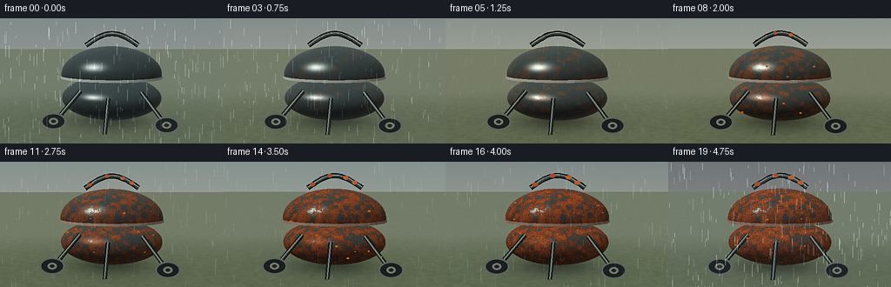
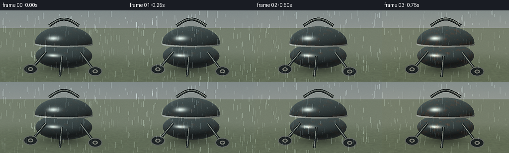
展开代码变化
--- 上一保存版本
+++ 本次保存版本
@@ -52,7 +52,7 @@
summer = math.exp(-((t - 0.34) / 0.20) ** 2)
autumn = math.exp(-((t - 0.66) / 0.18) ** 2)
winter = smoothstep(0.76, 1.0, t)
- rust = smoothstep(0.02, 0.98, t) ** 0.70
+ rust = 0.075 + 0.925 * smoothstep(0.02, 0.98, t) ** 0.70
wet_wave = 0.5 + 0.5 * math.sin(t * math.pi * 4.5 + 0.4)
rain = (0.68 * spring + 0.18 * autumn + 0.72 * winter + 0.15 * (1.0 - summer)) * (0.72 + 0.28 * wet_wave)
return {
@@ -191,45 +191,34 @@
ys, xs = np.mgrid[0:RH, 0:RW].astype(np.float32)
y = ys / max(1, RH - 1)
x = xs / max(1, RW - 1)
- top = mix_color(hex_rgb("#8da3a2"), hex_rgb("#7b8585"), season["winter"]) * 0.82
- bottom = mix_color(hex_rgb("#d0c8ac"), hex_rgb("#b8bab0"), season["winter"]) * (0.82 + 0.18 * season["light"])
+ top = mix_color(hex_rgb("#9aaca6"), hex_rgb("#89928e"), season["winter"]) * 0.88
+ bottom = mix_color(hex_rgb("#c9c3a9"), hex_rgb("#b8b8aa"), season["winter"]) * (0.88 + 0.12 * season["light"])
background = top[None, None, :] * (1.0 - y[..., None]) + bottom[None, None, :] * y[..., None]
tree = np.zeros((RH, RW, 3), dtype=np.float32)
- tree[:] = hex_rgb("#34453a")
+ tree[:] = hex_rgb("#4c624b")
palette = [
- mix_color(hex_rgb("#4d7044"), hex_rgb("#9b8a4a"), season["autumn"]),
- mix_color(hex_rgb("#6b8351"), hex_rgb("#b18743"), season["autumn"]),
- mix_color(hex_rgb("#365b40"), hex_rgb("#765c34"), season["autumn"]),
- mix_color(hex_rgb("#81926a"), hex_rgb("#b5a36c"), season["autumn"]),
+ mix_color(hex_rgb("#617c4d"), hex_rgb("#9c8247"), season["autumn"]),
+ mix_color(hex_rgb("#788c59"), hex_rgb("#b08d4c"), season["autumn"]),
+ mix_color(hex_rgb("#486b4b"), hex_rgb("#80623b"), season["autumn"]),
+ mix_color(hex_rgb("#8d9a70"), hex_rgb("#b6a36d"), season["autumn"]),
]
- for _ in range(18):
+ for _ in range(30):
cx = rng.uniform(-0.08, 1.08)
- cy = rng.uniform(0.10, 0.52)
- rx = rng.uniform(0.055, 0.18)
+ cy = rng.uniform(0.08, 0.54)
+ rx = rng.uniform(0.045, 0.15)
ry = rx * rng.uniform(0.65, 1.2)
disk = np.exp(-(((x - cx) / rx) ** 2 + ((y - cy) / ry) ** 2) * 2.0)
color = palette[int(rng.integers(0, len(palette)))]
- tree += disk[..., None] * (color - tree) * rng.uniform(0.20, 0.38)
- horizon_blend = smoothstep(0.34, 0.70, y)[..., None]
- background = background * (1.0 - horizon_blend * 0.46) + tree * horizon_blend * 0.46
-
- # A simple fence creates a domestic garden setting without competing detail.
- fence = np.zeros((RH, RW, 3), dtype=np.float32)
- for index in range(15):
- x0 = 0.015 + index * 0.070
- slat = (x >= x0) & (x < x0 + 0.047) & (y > 0.39) & (y < 0.72)
- fence[slat] = mix_color(hex_rgb("#8a816b"), hex_rgb("#a69b7e"), season["autumn"])
- fence_mask = (y[..., None] > 0.39) & (y[..., None] < 0.72)
- background = background * (1.0 - 0.28 * fence_mask) + fence * 0.28
- rails = ((y > 0.48) & (y < 0.51)) | ((y > 0.64) & (y < 0.67))
- background = mix_color(background, hex_rgb("#9d947d")[None, None, :], rails[..., None] * 0.34)
+ tree += disk[..., None] * (color - tree) * rng.uniform(0.24, 0.45)
+ horizon_blend = smoothstep(0.26, 0.66, y)[..., None]
+ background = background * (1.0 - horizon_blend * 0.58) + tree * horizon_blend * 0.58
gray = np.sum(background, axis=-1, keepdims=True) / 3.0
background = mix_color(background, np.repeat(gray, 3, axis=-1), 0.12 + 0.28 * season["rain"] + 0.18 * season["winter"])
background *= 1.0 - 0.09 * season["rain"]
image = Image.fromarray(np.clip(background, 0, 255).astype(np.uint8), "RGB")
- image = image.filter(ImageFilter.GaussianBlur(2.6))
+ image = image.filter(ImageFilter.GaussianBlur(4.2))
return np.asarray(image, dtype=np.float32)
@@ -260,7 +249,7 @@
specular = np.maximum(dot(normals, half_vector), 0.0) ** 72.0
fresnel = (1.0 - np.maximum(dot(normals, view), 0.0)) ** 3.0
- paint = mix_color(hex_rgb("#1c2526"), hex_rgb("#293330"), 0.18 + 0.14 * season["summer"])
+ paint = mix_color(hex_rgb("#293233"), hex_rgb("#39423d"), 0.18 + 0.14 * season["summer"])
metal = hex_rgb("#939b93")
base = paint[None, None, :] * (ambient[..., None] + 0.73 * diffuse[..., None] + 0.18 * fill_diffuse[..., None])
base += hex_rgb("#8f9e91")[None, None, :] * fresnel[..., None] * 0.20
@@ -274,12 +263,12 @@
p = points * np.array([1.38, 1.65, 1.45], dtype=np.float32)
n1 = fbm(p + np.array([0.23, 0.17, 0.31], dtype=np.float32))
n2 = sample_noise(p * 3.7 + 0.57, 48)
- rim_bonus = np.exp(-((points[..., 1] - 0.735) / 0.052) ** 2) * 0.23
- low_bonus = smoothstep(0.76, 0.14, points[..., 1]) * 0.10
- scratch = smoothstep(0.75, 0.91, n2) * 0.13
+ rim_bonus = np.exp(-((points[..., 1] - 0.735) / 0.052) ** 2) * 0.28
+ low_bonus = smoothstep(0.76, 0.14, points[..., 1]) * 0.13
+ scratch = smoothstep(0.75, 0.91, n2) * 0.15
growth = season["rust"]
corrosion_field = n1 + rim_bonus + low_bonus + scratch
- threshold = 0.69 - 0.31 * growth
+ threshold = 0.63 - 0.31 * growth
rust = smoothstep(threshold, threshold + 0.18, corrosion_field) * growth
rust *= np.where(chrome, 0.58, 1.0)
@@ -290,7 +279,7 @@
rust_color = mix_color(rust_color, rust_light[None, None, :], smoothstep(0.74, 0.94, n2)[..., None] * 0.65)
rust_color *= (0.78 + 0.40 * n2[..., None])
rust_color *= ambient[..., None] + 0.56 * diffuse[..., None] + 0.14 * fill_diffuse[..., None]
- base = mix_color(base, rust_color, rust * 0.94)
+ base = mix_color(base, rust_color, rust * 0.98)
pit = smoothstep(0.80, 0.94, sample_noise(p * 7.0 + 0.12, 48)) * smoothstep(0.52, 0.92, growth)
base *= 1.0 - pit[..., None] * 0.28
@@ -303,6 +292,9 @@
micro = smoothstep(0.83, 0.97, sample_noise(p * 8.2 + 0.41, 48))
base += hex_rgb("#d9e7df")[None, None, :] * micro[..., None] * wet * (0.22 - 0.12 * rust[..., None])
base *= 0.96 + 0.07 * season["light"]
+ base = np.clip(base, 0, 255)
+ # Keep the rim crisp against the garden even when the weather is overcast.
+ base += np.where((material == 2)[..., None], hex_rgb("#4d554f")[None, None, :] * (0.12 + 0.12 * season["light"]), 0.0)
return np.clip(base, 0, 255)
候选 05播放与检查图
点击播放 · 原生 RGB 像素

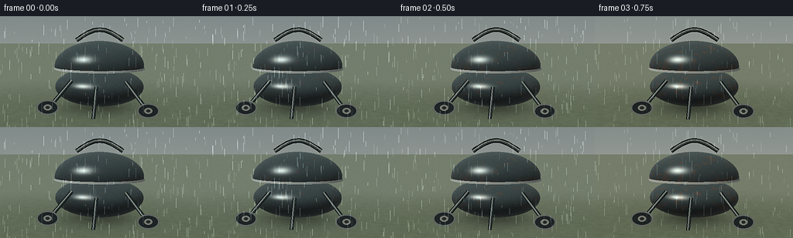
展开代码变化
--- 上一保存版本
+++ 本次保存版本
@@ -217,7 +217,7 @@
gray = np.sum(background, axis=-1, keepdims=True) / 3.0
background = mix_color(background, np.repeat(gray, 3, axis=-1), 0.12 + 0.28 * season["rain"] + 0.18 * season["winter"])
background *= 1.0 - 0.09 * season["rain"]
- image = Image.fromarray(np.clip(background, 0, 255).astype(np.uint8), "RGB")
+ image = Image.fromarray(np.clip(background, 0, 255).astype(np.uint8))
image = image.filter(ImageFilter.GaussianBlur(4.2))
return np.asarray(image, dtype=np.float32)
@@ -300,7 +300,7 @@
def draw_metal_parts(image, camera, forward, right, up, tan_half, season):
"""Project thin handle, legs, and wheels over the analytic kettle."""
- canvas = Image.fromarray(np.clip(image, 0, 255).astype(np.uint8), "RGB")
+ canvas = Image.fromarray(np.clip(image, 0, 255).astype(np.uint8))
draw = ImageDraw.Draw(canvas)
scale = RW / W
@@ -372,7 +372,7 @@
growth = season["rust"]
if growth < 0.45:
return image
- canvas = Image.fromarray(np.clip(image, 0, 255).astype(np.uint8), "RGB")
+ canvas = Image.fromarray(np.clip(image, 0, 255).astype(np.uint8))
draw = ImageDraw.Draw(canvas)
rng = np.random.default_rng(808 + frame_index // 2)
for _ in range(9):
@@ -390,7 +390,7 @@
camera, forward, right, up, tan_half = make_camera(season["t"])
origin, direction = make_rays(camera, forward, right, up, tan_half)
- background = make_background(season, rng)
+ background = make_background(season, np.random.default_rng(77))
with np.errstate(divide="ignore", invalid="ignore"):
ground_t = np.where(direction[..., 1] < -1e-5, -origin[..., 1] / direction[..., 1], np.inf)
ground_hit = np.isfinite(ground_t) & (ground_t > 0.001)
@@ -417,7 +417,12 @@
body_normal = normalize(body_normal_local / np.array([0.82, 0.35, 0.68], dtype=np.float32))
lid_normal = normalize(lid_normal_local / np.array([0.82, 0.46, 0.68], dtype=np.float32))
rim_normal = normalize(np.stack([points[..., 0] / 0.835 ** 2, np.zeros_like(points[..., 0]), points[..., 2] / 0.695 ** 2], axis=-1))
- lid_selected = lid_hit & (np.abs(lid_t - nearest) < 1e-5)
+ lid_selected = lid_hit & np.isclose(
+ np.where(lid_hit, lid_t, np.inf),
+ np.where(object_hit, nearest, np.inf),
+ atol=1e-5,
+ rtol=0.0,
+ )
normals = np.where(lid_selected[..., None], lid_normal, body_normal)
normals = np.where((material == 2)[..., None], rim_normal, normals)
@@ -432,7 +437,7 @@
image += rng.normal(0.0, 1.2, (RH, RW, 1)).astype(np.float32)
image = np.clip(image, 0, 255)
- small = Image.fromarray(image.astype(np.uint8), "RGB").resize((W, H), Image.Resampling.LANCZOS)
+ small = Image.fromarray(image.astype(np.uint8)).resize((W, H), Image.Resampling.LANCZOS)
small = small.filter(ImageFilter.UnsharpMask(radius=0.8, percent=55, threshold=2))
return np.asarray(small, dtype=np.uint8)
可观测工具轨迹
实际执行的命令与返回图片。
命令 1exit 0
/bin/bash -c "pwd && printf '\\n-- files --\\n' && rg --files -g '"'!*.mp4'"' -g '"'!*.mov'"' | sed -n '1,200p'"
命令 2exit 0
/bin/bash -c "printf '%s\\n' '-- prompt.txt --' && cat prompt.txt && printf '%s\\n' '-- GENERATION_RULES.md --' && cat GENERATION_RULES.md && printf '%s\\n' '-- task_spec.json --' && cat task_spec.json"
命令 3exit 0
/bin/bash -c "printf '%s\\n' '-- tool versions --' && (ffmpeg -version | head -n 3 || true) && (python3 --version || true) && (node --version || true) && (convert -version | head -n 2 || true) && (which blender || true) && (which chromium || true) && (which google-chrome || true)"
命令 4exit 0
/bin/bash -c 'cat artifact_io.py'
命令 5exit 0
/bin/bash -c "sed -n '1,240p' player_template.html"
命令 6exit 0
/bin/bash -c "python3 - <<'PY'
mods=['numpy','PIL','imageio','imageio_ffmpeg','cv2','scipy','matplotlib']
for m in mods:
try:
mod=__import__(m)
print(m, 'OK', getattr(mod,'__version__',''))
except Exception as e:
print(m, 'NO', type(e).__name__, e)
PY"命令 7exit 1
/bin/bash -c 'python3 generate.py'
命令 8exit 1
/bin/bash -c 'python3 generate.py'
命令 9exit 1
/bin/bash -c 'python3 generate.py'
命令 10exit 1
/bin/bash -c 'python3 generate.py'
命令 11exit 1
/bin/bash -c 'python3 generate.py'
命令 12exit 0
/bin/bash -c 'python3 generate.py'
命令 13exit 0
/bin/bash -c "python3 - <<'PY'
from PIL import Image
from pathlib import Path
for i in [0,4,9,14,19]:
im=Image.open(f'frames/{i:02d}.png')
im.resize((1024,576), Image.Resampling.NEAREST).save(f'.tmp/frame_{i:02d}_nearest.png')
PY"命令 14exit 0
/bin/bash -c 'cp generate.py .tmp/generate_candidate1.py'
命令 15exit 0
/bin/bash -c 'mv generate.py .tmp/generate_flat_renderer.py'
命令 16exit 0
/bin/bash -c 'python3 generate.py'
命令 17exit 0
/bin/bash -c "python3 - <<'PY'
from PIL import Image
for i in [0,4,9,14,19]:
im=Image.open(f'frames/{i:02d}.png')
im.resize((1024,576), Image.Resampling.NEAREST).save(f'.tmp/v2_{i:02d}.png')
PY"命令 18exit 0
/bin/bash -c 'python3 generate.py'
命令 19exit 0
/bin/bash -c "python3 - <<'PY'
from PIL import Image
for i in [0,4,9,14,19]:
Image.open(f'frames/{i:02d}.png').resize((1024,576), Image.Resampling.NEAREST).save(f'.tmp/v3_{i:02d}.png')
PY"命令 20exit 0
/bin/bash -c 'python3 generate.py'
命令 21exit 0
/bin/bash -c "python3 - <<'PY'
from pathlib import Path
import json
import numpy as np
from PIL import Image
p=Path('.')
frames=sorted((p/'frames').glob('*.png'))
arr=np.stack([np.asarray(Image.open(f).convert('RGB')) for f in frames])
print('files',len(frames),'shape',arr.shape,'dtype',arr.dtype)
print('pixel npz', np.load(p/'pixels.npz')['pixels'].shape)
print('html bytes', (p/'index.html').stat().st_size)
print('frame luminance means', [round(float(x),1) for x in arr.mean(axis=(1,2,3))[::4]])
print('interframe mean abs diff', [round(float(np.abs(arr[i].astype(float)-arr[i-1]).mean()),2) for i in range(1,len(arr))])
print('unique colors frame0/frame19', len(np.unique(arr[0].reshape(-1,3),axis=0)),len(np.unique(arr[-1].reshape(-1,3),axis=0)))
PY"命令 22exit 0
/bin/bash -c "git status --short && printf '\\n-- artifacts --\\n' && ls -lh generate.py task_spec.json pixels.npz index.html inspection.png transition_check.png | sed -n '1,20p' && printf '\\n-- frames --\\n' && ls frames | tail -n 4"
视觉工具实际返回图片 1

视觉工具实际返回图片 2

视觉工具实际返回图片 3
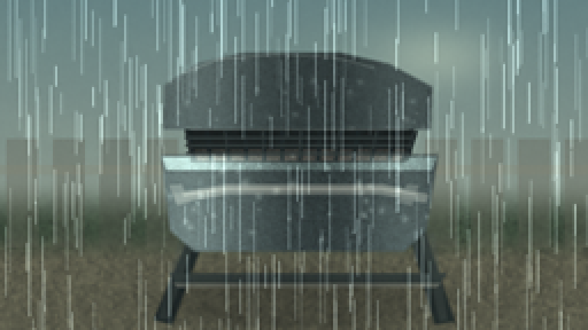
视觉工具实际返回图片 4
视觉工具实际返回图片 5
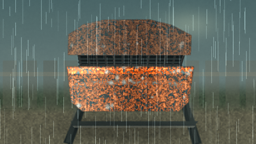
视觉工具实际返回图片 6

视觉工具实际返回图片 7
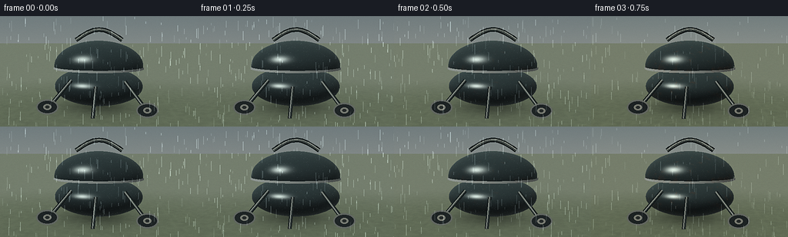
视觉工具实际返回图片 8
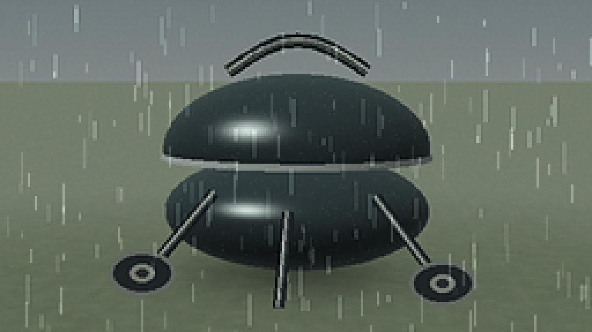
视觉工具实际返回图片 9
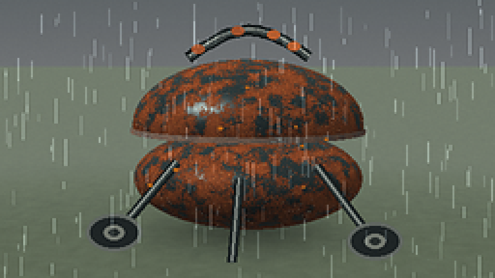
视觉工具实际返回图片 10

视觉工具实际返回图片 11
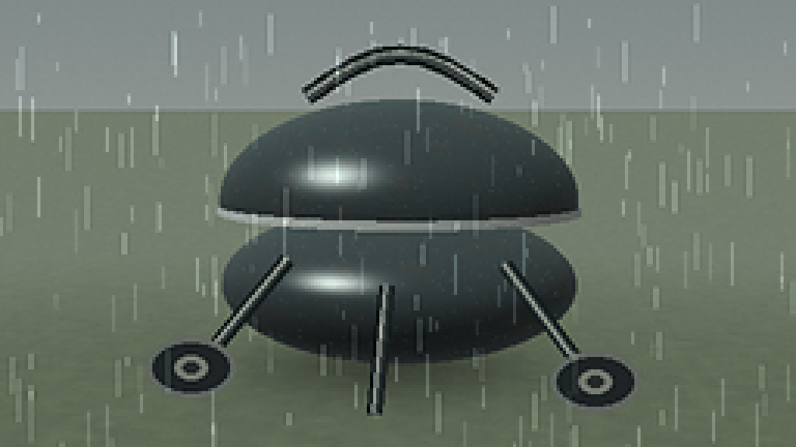
视觉工具实际返回图片 12
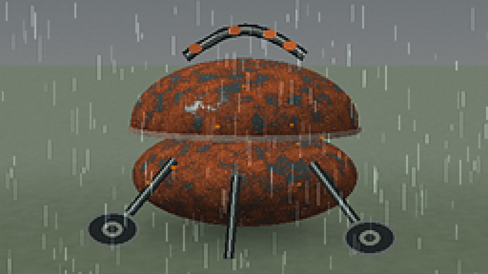
视觉工具实际返回图片 13
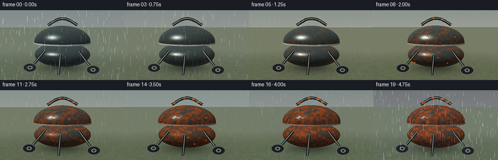
保存候选 5 份；完成命令 22 次；可验证图片返回 13 张。原始 API 响应与完整日志保留在本地。